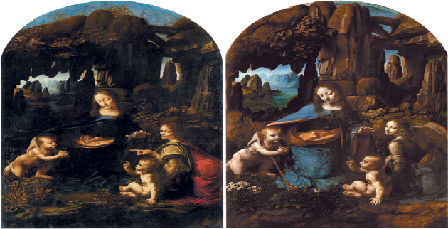

Pintura oculta sob obra-prima de da Vinci é revelada
Clique aqui para ver a pintura
Existem duas versões semelhantes de um quadro famoso de Leonardo da Vinci, conhecido como “Virgem das Rochas”. Agora, membros do museu National Gallery de Londres, no Reino Unido, estão dizendo que podem ser na verdade três.
Isso porque técnicas de imageamento descobriram uma versão diferente oculta sob um dos quadros, que atualmente fica no National Gallery.
Virgem das Rochas
Da Vinci fez duas pinturas semelhantes mostrando a virgem Maria, o menino Jesus e São João Batista ainda bebê. A primeira foi vendida a um cliente particular e hoje é exibida no Museu do Louvre, em Paris (à direita na imagem abaixo). A segunda, conforme já explicamos, se encontra agora no National Gallery e foi feita para a Igreja Católica.

“Esta segunda versão não é mera reprodução da primeira”, disse a galeria em um comunicado. “Junto com ajustes significativos nas figuras, ele também usa essa versão para explorar novos tipos de efeitos de iluminação baseados em sua própria pesquisa em óptica e fisiológica da visão humana”.
No entanto, pesquisadores do museu britânico perceberam que esta segunda versão possui uma terceira, oculta, em cima da qual Leonardo pintou seu quadro final.
Usando três técnicas de imageamento diferentes, os pesquisadores detectaram traçados de um desenho diferente que colocava Maria no lado esquerdo da imagem, de frente para o menino Jesus e com um anjo à direita. A composição final de da Vinci foi significativamente alterada em comparação à essa oculta.